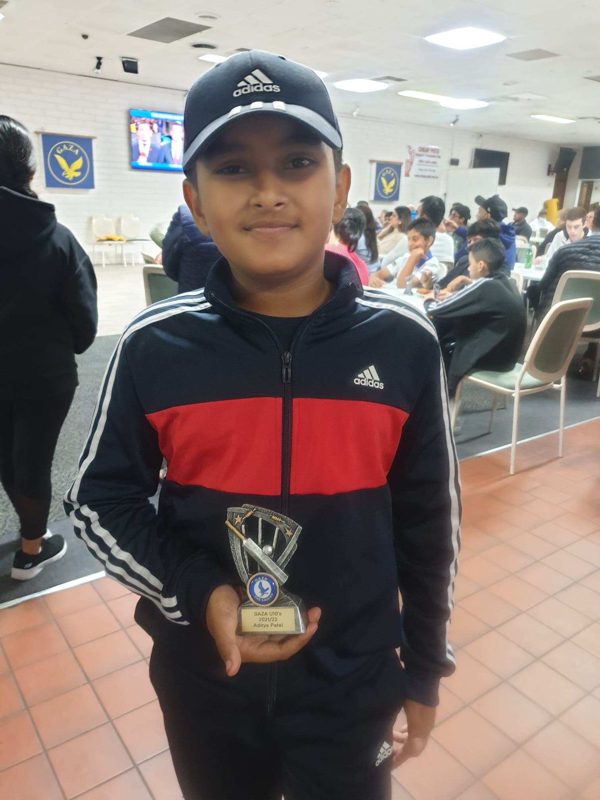

I play alot of sports like cricket ,tt ,golf ,piano ,video games ,xbox ,tablet , swimming and motorcross dirt bike i have a yamaha and kawasaki klx 110 . the yamaha one is small for me 110 is perfect but it has cluch so it will be 50 mm longer .cashino i use to play little bit of piano when my dad take me there i was the only one who hit the first six in my team it was the under 10.
I loved plying video games since I turned 3 years. I used to play video games in mobile phone, tablet, Ipad, Laptop, Gaming machines and Console. My favourite video game series are Assasin Creed, Gears of War, Forza Horizon. My favourite game characters are Luigi, Bayek of Siwa, Carmin, Dom, Tai and Marcus Phenix. I have Ninetendo's Wii Console and XBOX series X. My XBOX supports Dolby Atmos and Dolby Vision and gives amazing experience on 60 fps and 120 fps games. I have 74 online friends. Online gaming is my favourite activity during winter and rainy days.
I started playing during covid restriction. We use to play in our backyard. I started cricket with soft tennis balI .We enjoyed backyard cricket alot .So i requested my to buy me a cricket kit.And he did then i joined gaza community club.I'm a right handed batsman and a right handed fast bowler and im learning spin bowling i was the firstone to hit a 6 in my team on my 9th birthday that was the day i hit my first 6.What is Cricket? Cricket is a game of strategy between two teams. Each team bats and fields in turn – the batters try to score runs; the fielders try to stop them. The team with the most runs wins
That is my cricket under 10 Gaza Trophy
I started swimming when i came to Australia they were teaching us how to bubble once you pass that level then you go on to the next level.So in there they teach use how to do the basic float like float on back , float on tummy and mushroom float.Then in the next level they teach us how to swim the class i'm in was platupus A. propulsion of the body through water by combined arm and leg motions and the natural flotation of the body. Swimming as an exercise is popular as an all-around body developer and is particularly useful in therapy and as exercise for physically handicapped persons. It is also taught for lifesaving purposes. For activities that involve swimming, see also diving, lifesaving, surfing, synchronized swimming, underwater diving, and water polo.
i started motorcross this year i have 2 bike the old one is yemaha and the 2nd one is kawasaki we go to port gwaler.what is motorcross from motorcycle trials competitions, such as the Auto-Cycle Clubs's first quarterly trial in 1909 and the Scottish Six Days Trial that began in 1912.[1][2] When organisers dispensed with delicate balancing and strict scoring of trials in favour of a race to become the fastest rider to the finish, the activity became known as "hare scrambles", said to have originated in the phrase, "a rare old scramble" describing one such early race.[1] Though known as scrambles racing (or just scrambles) in the United Kingdom, the sport grew in popularity and the competitions became known internationally as "motocross racing", by combining the French word for motorcycle, motocyclette, or moto for short, into a portmanteau with "cross country".
I have 5 cycle. 2 for mountain and 2 for trail biking and 1 for Enduro. one day i rode 32 km! We have 1 trail but it has 2 way to go. 1 is to the mountain and the other one is to the city we went couple times in the city but we once went to the mountain only once.
I have one electric scateboard with a controller. It has three speed none, Medium, High.The remote contain 1 batter . I felt i was wobbleing and going to fall over when i got on the board but still i jumped off because i was scared then i balenced on my 2 feet and when i got use to it so i id more and more laps then i sill hadden't use it for few years.
Footy is Australia national game Australian Rules Football or "Footy" is fast, free-flowing game that is the most popular sport in Australia. The game looks to be hybrid of rugby and soccer with a bit of basketball, hockey, football, lacrosse and volleyball thrown in for good measure. The game dates to the 1850s in Melbourne Australia, which is before the formation of the Football Association ("soccer") and the Rugby Union in England.The game is played on an oval that is about twice as long as an American football field and as wide as an American football field is long. There are 18 players on each side. The objective is to kick the ball between the two middle polls at each end. A goal is worth scored if the ball is kicked through the middle posts and is worth 6 point. If the goal is kicked between the middle post and the smaller side post or if the ball goes between the middle posts without being kicked, then 1 point is scored.walker markThere is no offside, so players can move any where on the field and can pass the ball in any direction. However, you are not allowed to throw the ball. To pass, a player may kick (punt) the ball or "hand pass" the ball. A hand pass is a pass in which the ball is placed on the palm of one hand and punched off with a closed fist of the other hand.One of the highlights of Australian football is the high mark or "specky". A mark is term used when a player catches the ball from a kick. A player who takes a mark is awarded a free kick. A "specky" is when a player takes an especially spectacular mark, such as the picture on the right when Carlton's Andrew Walker climbed into the air to take this great mark.I play for Gaza under 10s my coaches name is pole
I play back hand and little bit of 4 hand i play more of back hand i play spin fast chop shot.what is table tennisTable tennis, also known as ping-pong and whiff-whaff, is a sport in which two or four players hit a lightweight ball, also known as the ping-pong ball, back and forth across a table using small solid rackets. The game takes place on a hard table divided by a net. Except for the initial serve, the rules are generally as follows: players must allow a ball played toward them to bounce once on their side of the table and must return it so that it bounces on the opposite side at least once. A point is scored when a player fails to return the ball within the rules. Play is fast and demands quick reactions. Spinning the ball alters its trajectory and limits an opponent's options, giving the hitter a great advantage
In dance i do hip hop.Although widely considered a synonym for rap music, the term hip-hop refers to a complex culture comprising four elements: deejaying, or “turntabling”; rapping, also known as “MCing” or “rhyming”; graffiti painting, also known as “graf” or “writing”; and “B-boying,” which encompasses hip-hop dance, style, and attitude, along with the sort of virile body language that philosopher Cornel West described as “postural semantics.” (A fifth element, “knowledge of self/consciousness,” is sometimes added to the list of hip-hop elements, particularly by socially conscious hip-hop artists and scholars.) Hip-hop originated in the predominantly African American economically depressed South Bronx section of New York City in the late 1970s. As the hip-hop movement began at society’s margins, its origins are shrouded in myth, enigma, and obfuscation.
I made this website by HTML. Computer programming is the process of performing a particular computation (or more generally, accomplishing a specific computing result), usually by designing and building an executable computer program. Programming involves tasks such as analysis, generating algorithms, profiling algorithms' accuracy and resource consumption, and the implementation of algorithms (usually in a chosen programming language, commonly referred to as coding).[1][2] The source code of a program is written in one or more languages that are intelligible to programmers, rather than machine code, which is directly executed by the central processing unit. The purpose of programming is to find a sequence of instructions that will automate the performance of a task (which can be as complex as an operating system) on a computer, often for solving a given problem. Proficient programming thus usually requires expertise in several different subjects, including knowledge of the application domain, specialized algorithms, and formal logic.Tasks accompanying and related to programming include testing, debugging, source code maintenance, implementation of build systems, and management of derived artifacts, such as the machine code of computer programs.
I'm working in Arduino. Arduino is a app witch teaches robotics.Robotics develops machines that can substitute for humans and replicate human actions. Robots can be used in many situations for many purposes, but today many are used in dangerous environments (including inspection of radioactive materials, bomb detection and deactivation), manufacturing processes, or where humans cannot survive (e.g. in space, underwater, in high heat, and clean up and containment of hazardous materials and radiation). Robots can take any form, but some are made to resemble humans in appearance. This is claimed to help in the acceptance of robots in certain replicative behaviors which are usually performed by people.
I have my own youtube channel its not that famous but still .YouTubers' influence has also extended beyond the platform. Some have ventured into mainstream forms of media, such as Liza Koshy, who, among other pursuits, hosted the revival of the Nickelodeon show Double Dare[15] and starred in the Netflix dance-comedy film Work It.[16] In 2019, Ryan's Mystery Playdate, a show starring Ryan Kaji, the then-seven-year-old host of the toy review and vlog channel Ryan's World, began airing on Nick Jr.;[17] later that year, NBC debuted A Little Late with Lilly Singh in its 1:35 AM ET time slot. Singh's digital prominence was cited as a reason for her selection as host by then-NBC Entertainment co-chairman George Cheeks.[18] In addition to expanding into other forms of media, several YouTubers have used their influence to raise money for charity or speak out on social issues. Notable examples include MrBeast and Mark Rober, who helped raise over $20 million with their Team Trees campaign,[19][20] and Felipe Neto, who publicly criticized Brazilian president Jair Bolsonaro for his response to the COVID-19 pandemic.[21] In 2020, Time named Neto and fellow YouTuber JoJo Siwa to its annual list of the world's 100 most influential people.
I don't play that much golf.Golf, unlike most ball games, cannot and does not utilize a standardized playing area, and coping with the varied terrains encountered on different courses is a key part of the game. The game at the usual level is played on a course with an arranged progression of 18 holes, though recreational courses can be smaller, often having nine holes. Each hole on the course must contain a teeing ground to start from, and a putting green containing the actual hole or cup 4+1⁄4 inches (11 cm) in diameter. There are other standard forms of terrain in between, such as the fairway, rough (long grass), bunkers (or "sand traps"), and various hazards (water, rocks) but each hole on a course is unique in its specific layout and arrangement.
in P.E we play dogeball im good at it but i'm still learning .Dodgeball is a team sport in which players on two teams try to throw balls and hit opponents, while avoiding being hit themselves. The objective of each team is to eliminate all members of the opposing team by hitting them with thrown balls, catching a ball thrown by an opponent, or inducing an opponent to commit a violation, such as stepping outside the court.The sport is mostly played in schools under varying rules, and also formally as an international sport, under rules that vary among international governing bodies, such as the World Dodgeball Federation (WDBF), which runs the Dodgeball World Championship and the World Dodgeball Association (WDA). USA Dodgeball is the governing entity for dodgeball in the United States, with member leagues and clubs across the nation.
I'm learning how to make indian food i'm learning and my mom is teaching mean .The expansion of agriculture, commerce, trade, and transportation between civilizations in different regions offered cooks many new ingredients. New inventions and technologies, such as the invention of pottery for holding and boiling of water, expanded cooking techniques. Some modern cooks apply advanced scientific techniques to food preparation to further enhance the flavor of the dish served.
I'm a good drawer. Drawing is a form of visual art in which an artist uses instruments to mark paper or other two-dimensional surface. Drawing instruments include graphite pencils, pen and ink, various kinds of paints, inked brushes, colored pencils, crayons, charcoal, chalk, pastels, erasers, markers, styluses, and metals (such as silverpoint). Digital drawing is the act of drawing on graphics software in a computer. Common methods of digital drawing include a stylus or finger on a touchscreen device, stylus- or finger-to-touchpad, or in some cases, a mouse. There are many digital art programs and devices.